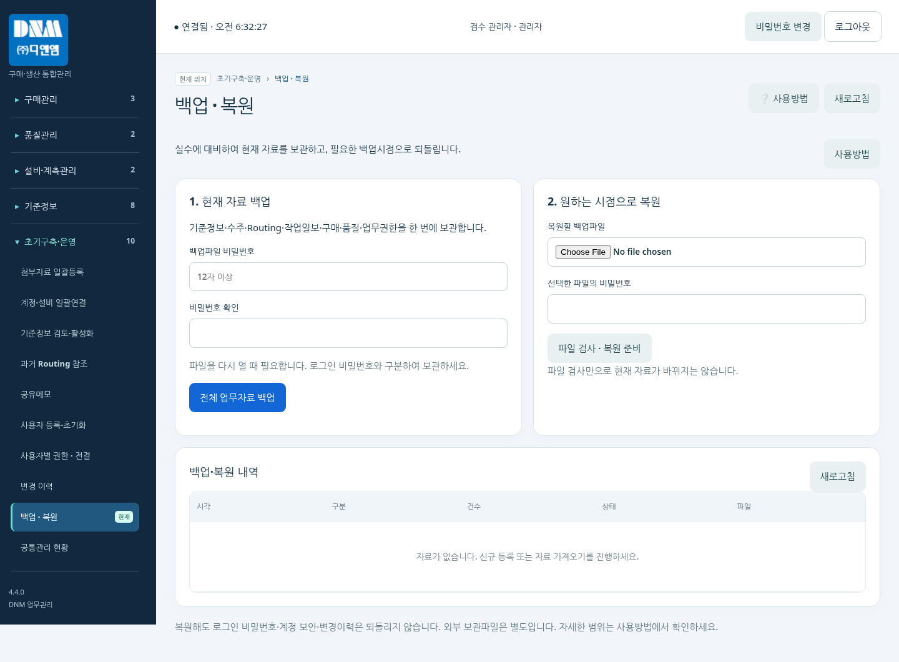

ADMIN / 01
관리자 운영 순서
DNM MES v4.4 · 관리자용
처음 자료를 준비한 뒤 수주·Routing·작업실적을 연결하고, 중요한 작업 전후에는 백업합니다. 본 매뉴얼은 메뉴 사용에 필요한 순서만 설명합니다.
- 자료 일괄등록 → 기준정보 검토·활성화
- 작업자 로그인 사용자 등록 → 권한·설비·공정 연결
- 고객 수주 등록 → 제품 Routing 확인 → 주문별 Routing 작성
- 설비·작업자 배정 → 배포·출력 → 현장 작업실적 확인
- 품질·출하 확인 → 업무자료 백업
| 그룹 | 주로 하는 일 |
|---|---|
| 수주관리 | 고객 수주, 제품 공정안, 주문별 Routing 관리 |
| 생산관리 | 작업지시 확인, 시작·종료·완료, 작업일보 |
| 구매관리 / 품질관리 | 요청·결재·발주·입고·정산 / 검사·출하 |
| 설비·계측관리 / 기준정보 | 설비·계측기, 제품·자재·공정·작업자 |
| 초기구축·운영 | 자료 등록·계정·권한·백업·복원 |
그룹명을 눌러 접고 펼칩니다. 선택 메뉴의 ‘현재’ 표시와 오른쪽 상단 ‘현재 위치’를 확인하세요. 자세한 설명은 각 화면의 ‘사용방법’에서 볼 수 있습니다.
DNM MES v4.4 · 1 / 9
ADMIN / 02
기준정보 등록과 확인
초기구축·운영 → 첨부자료 일괄등록
이미 기준정보를 등록했다면 처음부터 다시 입력하지 않습니다. 새로운 자료 또는 빠진 자료만 검토하여 반영합니다.
- 현재 업무자료를 먼저 백업합니다.
- 자료묶음 선택에서 제공받은 PRIVATE 자료파일을 선택합니다.
- 등록 종류·건수·확인사항을 확인합니다. 기존 수주를 유지하려면 수주 추가 여부를 다시 점검합니다.
- 선택 자료 일괄등록을 실행하고 ‘신규 / 기존 보존 / 완료’ 결과를 확인합니다.
- 기준정보 검토·활성화에서 원문과 실물을 확인한 행만 검토완료 처리합니다.
| 항목 | 반드시 확인할 내용 |
|---|---|
| 제품·자재 | 고객 품번, 품명, 규격, 단위. 없는 단가를 임의로 0원 입력하지 않기 |
| 작업자 | 현재 재직 여부, 사번, 부서, 작업자 ID |
| 설비·계측기 | 실물 코드, 사용상태, 담당자. 다수 보유 행의 개별번호 |
| 공정·제품 Routing | 공정번호·순서·유형·검사코드, 상충하는 원문 후보 |
자료가 등록되어도 검토대기이면 작업 배정의 선택목록에 보이지 않을 수 있습니다. PRIVATE 파일을 공개 웹폴더에 올리지 마세요.
DNM MES v4.4 · 2 / 9
ADMIN / 03
직원 이름 로그인과 권한 관리
기준정보 → 작업자 / 초기구축·운영 → 작업자 사용·로그인 관리
작업자 기준정보를 한 곳에서 관리합니다. 일반 직원에게 이메일 주소를 요구하지 않습니다.
- 기준정보의 작업자 이름·사번·재직 여부를 확인합니다.
- 작업자 사용·로그인 관리에서 실제 재직자는 사용, 퇴직자는 중지로 관리합니다.
- 처음 등록하는 직원에게 한 번만 1111 계정 발급을 누릅니다.
- 직원은 본인 이름(ID)·1111로 접속하여 30분 내 개인 비밀번호를 설정합니다.
- 사용자별 권한·전결에서 기본역할(조회자/일반사용자)과 업무별 조회·등록·수정 권한을 함께 정합니다.
| 상황 | 처리 방법 |
|---|---|
| 신규 직원 | 작업자 사용 → 1111 계정 발급 |
| 동명이인 | 이름-2 등 화면에 표시된 로그인 ID 안내 |
| 비밀번호 분실 | 관리자 1111 초기화 → 직원 개인 비밀번호 재설정 |
| 퇴직자 | 작업자 사용중지(기존 작업실적 보존) |
| 작업 배정 | 수주별 Routing에서 설비와 작업자를 독립적으로 선택, 복수 배정 가능 |
로그인 ID는 이름, 초기번호는 1111이지만 계속 사용할 수는 없습니다. 개인 비밀번호는 문자·숫자를 포함한 12자 이상입니다. 서버 설치 정보는 별도 설치 안내서에서 확인하세요.
DNM MES v4.8 · 3 / 9
ADMIN / 04
수주와 제품 Routing 준비
수주관리 → 고객 수주 → 제품 Routing 템플릿
고객의 자재코드(품번)를 기준으로 제품 공정안을 확인합니다. Excel의 ‘신규’ 표시만으로 신규 제품이라고 판단하지 않습니다.
- 고객 수주에서 Excel 업로드를 선택합니다.
- 미리보기에서 고객, PO 번호, 자재코드, 수량, 날짜, 생산오더를 원문과 대조한 뒤 등록합니다.
- 신규 품번은 제품 Routing을 등록하고, 양산 품번은 검토완료 공정안과 정확히 매칭합니다.
- 공정 후보가 여러 개이면 Routing 원문 후보에서 원본을 비교하고 맞는 공정안을 선택합니다.
- 수주 → Routing 초안에서 주문을 선택하고 담당 생산관리자와 초안 내용을 확인합니다.
| 자료 | 관리 원칙 |
|---|---|
| 수주 주요항목 | PO 번호·자재코드·자재명·등급코드·발주수량·입고수량·단가·금액·발주일·납기·생산오더·Project내역 |
| 입고수량 | 고객 원문의 입고수량. 사내 생산완료수량으로 대신 사용하지 않기 |
| 제품 Routing | 품번별 표준 공정안. 실제 주문에 적용하기 전에 검토 |
| 주문별 Routing | 해당 생산오더의 LOT·수량·납기·배정을 확정하는 작업지시 |
이미 등록한 같은 주문을 다시 가져올 때에는 업데이트 여부와 사유를 확인합니다. 같은 제목의 원본 열은 위치에 따라 별도로 보존됩니다.
DNM MES v4.4 · 4 / 9
ADMIN / 05
Routing 배포·출력과 작업 확인
수주관리 → Routing Sheet 관리 / 생산관리 → 작업지시 · 배포현황
배포 전에는 실제 공정순서와 배정을 확인합니다. 배포 후에는 이 Routing을 기준으로 작업자가 실적을 기록합니다.
- 진행·종료·전체 상태를 선택하고 품번 또는 생산오더로 Routing을 찾습니다.
- 공정·배정에서 공정번호·순서·작업내용·설비·작업자·지시수량을 확인합니다.
- LOT·REV·납기와 담당자를 확인한 뒤 배포하고 Routing Sheet를 출력합니다.
- 작업일보 사전양식이 필요하면 Routing을 선택하여 출력합니다. 출력만으로 실적이 저장되지는 않습니다.
- 작업자가 시작·부분종료·공정완료를 입력한 뒤 대시보드와 작업일보에서 수량·상태를 확인합니다.
| 상태·기능 | 판단 기준 |
|---|---|
| 작업 종료 | 당일 또는 부분 작업 종료. 남은 지시량은 계속 관리 |
| 공정 완료 | 누적 처리수량과 지시수량 확인 후 해당 공정 완료 |
| Routing 종료 | 모든 공정 완료, 진행 중 작업과 수량 확인대기 실적 없음 |
| 최종합격·출하 | Routing 종료와 별도. 품질·출하 화면에서 확인 |
실적이 있는 공정이나 수량을 임의로 덮어쓰지 않습니다. 정정·취소·개정 사유를 남기고 결과를 다시 확인하세요.
DNM MES v4.4 · 5 / 9
ADMIN / 06
구매·품질 및 매일의 점검
구매관리 / 품질관리 / 작업진척 대시보드
수주·생산과 함께 구매와 품질 진행상태를 확인합니다. 관리자 권한이 있다고 모든 결재를 대신 처리하는 것은 아닙니다.
- 구매요청에서 자재·수량·단가·납기와 결재자 순서를 확인하여 상신합니다.
- 현재 차례의 결재자가 승인합니다. 전결은 부여된 한도·기한 및 필수결재 조건에 맞을 때만 사용합니다.
- 승인 완료 후 발주하고 실제 입고수량을 기록합니다. 부분입고·반품은 별도로 처리합니다.
- 정산에서는 발주·입고·증빙금액과 지급기록을 대조합니다. 은행 송금이 자동 실행되는 기능은 아닙니다.
- 검사 결과와 최종 합격수량을 확인한 뒤 출하합니다. 지시·작업·검사·출하수량을 혼동하지 않습니다.
| 매일 확인 | 조치 |
|---|---|
| 긴급지시·납기변경 | 현장 확인 여부와 변경사유 확인 |
| 진행 중 작업 | 종료 누락·잘못된 설비·중복실적 확인 |
| 수량 확인대기 | 실제 수량 확인 후 확정 |
| 현장 TV | 마지막 갱신시각과 연결상태 확인 |
| 하루 종료 | 중요자료 확인 후 업무 전체 백업 |
TV는 등록된 작업상태를 표시합니다. 센서 기반 실제 설비가동률이 아닙니다. 여러 공정의 수량을 더하여 완제품 완료량으로 보지 마세요.
DNM MES v4.4 · 6 / 9
ADMIN / 07
현재 업무자료 전체 백업
초기구축·운영 → 백업 · 복원
시험자료 등록 전, 대량 수정 전, 정상운영 시작 전과 하루 업무 종료 후에 백업합니다.
- 백업파일 비밀번호를 12자 이상으로 입력하고 확인칸에 한 번 더 입력합니다.
- 전체 업무자료 백업을 누릅니다. 진행률과 대기 표시가 보이는 동안 반복 클릭하지 않습니다.
- 다운로드 폴더에서 년월일_시분초_KST로 시작하는 .dnmbak 파일을 확인합니다.
- 백업파일과 비밀번호는 분리하여 보관하고, 파일은 별도 장치에도 복사합니다.

가상자료 화면 예시 · 왼쪽은 백업, 오른쪽은 복원할 파일 검사
예: 20261029_091530_KST_DNM_업무전체_번호.dnmbak. 백업파일 비밀번호는 로그인 비밀번호와 별개입니다. 파일 비밀번호를 잊으면 그 파일을 열 수 없습니다. 같은 프로그램에 서버 백업이 남아 있으면 ‘다시 받기’로 새 비밀번호 파일을 받을 수 있습니다.
DNM MES v4.4 · 7 / 9
ADMIN / 08
선택한 백업시점으로 복원
초기구축·운영 → 백업 · 복원
현재 업무자료를 선택 시점으로 되돌리는 작업입니다. 다른 직원의 입력을 멈추고 관리자만 실행합니다.
- 복원할 .dnmbak 파일과 해당 파일 비밀번호를 입력하고 ‘파일 검사 · 복원 준비’를 누릅니다.
- 화면의 복원시각·파일명·건수를 확인합니다. 검사만으로 자료는 바뀌지 않습니다.
- ‘현재자료 안전백업 받기’를 실행합니다. 이 파일은 선택한 복원파일과 같은 파일 비밀번호를 사용합니다.
- 방금 받은 안전백업 파일을 다시 선택합니다. 파일 확인이 끝나야 복원 버튼이 열립니다.
- 복원 사유, 확인문구 ‘백업시점복원’, 관리자 본인의 현재 로그인 비밀번호를 입력하고 확인란을 체크합니다.
- ‘선택 시점으로 복원’을 누릅니다. 완료 후 모든 사용자가 다시 로그인하여 자료를 확인합니다.
| 복원되는 것 | 현재 상태를 유지하는 것 |
|---|---|
| 기준정보·수주·Routing·작업일보 | 계정 이메일·관리자 역할·사용중지 상태 |
| 구매·입고·정산·검사·출하 자료 | 개인 비밀번호·초기화·보안 상태 |
| 메뉴별 업무권한·전결 설정 | 변경이력·백업·복원 이력 |
백업 이후 추가·수정한 업무자료는 되돌아갑니다. 외부 문서파일·프로그램·환경설정은 별도 복구 대상입니다. 안전백업 후 누군가 자료를 바꾸면 안전백업을 다시 받아야 합니다. 복원 응답이 끊기면 반복 실행하지 말고 재로그인하여 처리 내역부터 확인하세요.
DNM MES v4.4 · 8 / 9
ADMIN / 09
문제가 생겼을 때·운영 시작 확인
각 화면 → 사용방법 / 초기구축·운영 → 백업 · 복원
평소 화면에는 업무에 필요한 안내만 표시됩니다. 기술정보가 필요할 때에는 사용방법의 ‘설치·복구 담당자용 기술 안내’를 펼쳐 확인합니다.
- 시험용 수주 1건으로 등록 → Routing 배포 → 시작·종료·완료를 확인합니다.
- 조회 전용 계정에서 등록·수정이 차단되는지 확인합니다.
- 시험 백업 → 시험자료 변경 → 안전백업 → 시점 복원 후 값과 건수를 확인합니다.
- 확인 후 정상 초기자료를 백업하고 직원에게 실제 접속방법을 안내합니다.
| 상황 | 먼저 할 일 |
|---|---|
| 백업 기능 업데이트 필요 | 설치 담당자가 동봉된 12번 확장 파일과 전체 패치 적용 여부 확인 |
| 처리 중 표시가 계속됨 | 반복 클릭 금지. 백업 수집은 중단 가능, 복원 진행은 완료·결과 확인까지 대기 |
| 안전백업 후 자료 변경 | 직원 입력 중지 → 안전백업 다시 받기 → 같은 파일 재선택 |
| 다른 파일·비밀번호 오류 | 복원할 파일의 이름·날짜·파일 비밀번호 확인 |
| 백업에 있던 계정 삭제 | 계정 복구 가능 여부를 담당자에게 확인. 임의 신규 계정으로 대체 금지 |
| 복원 후 로그인 다시 요구 | 정상 절차. 본인 현재 비밀번호로 다시 로그인 |
| 직원 작업목록이 비어 있음 | 계정·권한·설비·작업자 배정·Routing 배포 확인 |
이 매뉴얼은 v4.4 화면 기준입니다. 실제 운영 DB의 백업·복원 검증은 설치 담당자와 시험 환경에서 먼저 수행해야 합니다. 계정·외부 파일까지 포함한 재해복구는 별도 플랫폼 백업이 필요합니다.
DNM MES v4.4 · 9 / 9